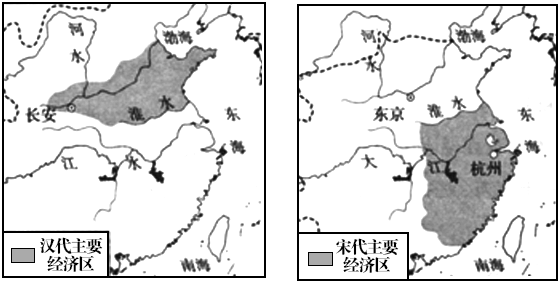

2018年北京市中考历史试题 · 选择题 第6、7、8、9、10题
6．（3分）与如图示意图中①相关的史实是（ ）
A．北魏改革，民族交融B．定都建康，开发江南
C．开凿运河，创立科举D．贞观之治，开元盛世
7．（3分）对以下大事年表解读正确的是（ ）
960年 | 1005年 | 1038年 | 1044年 | 1125年 | 1127年 | 1140年 | 1141年 |
北宋建立 | 宋辽订立澶渊之盟 | 西夏建立 | 宋夏达成和议 | 金灭辽 | 金灭北宋 | 南宋取得郾城大捷 | 南宋与金签订和约 |
A．各民族政权始终处于战争状态
B．北宋政权存在不超过一百年
C．辽与南宋维持相对和平的局面
D．各民族政权并立与力量消长
8．（3分）如图两幅示意图反映的变化是（ ）

A．商品经济发展B．耕地面积增加
C．海外贸易兴起D．经济重心南移
9．（3分）清朝修建永安寺（位于今北海公园白塔旁），寺内供奉达赖和班禅的塑像，这有利于加强中央政府与某疆地区的联系。这一地区是（ ）
A．西藏B．台湾C．新疆D．东北
10．（3分）戚继光抗倭和郑成功收复台湾的共同之处是（ ）
A．加强了明朝的对外交往B．打破了清朝的闭关锁国
C．抗击了西方列强的侵略D．维护了祖国的海疆安全